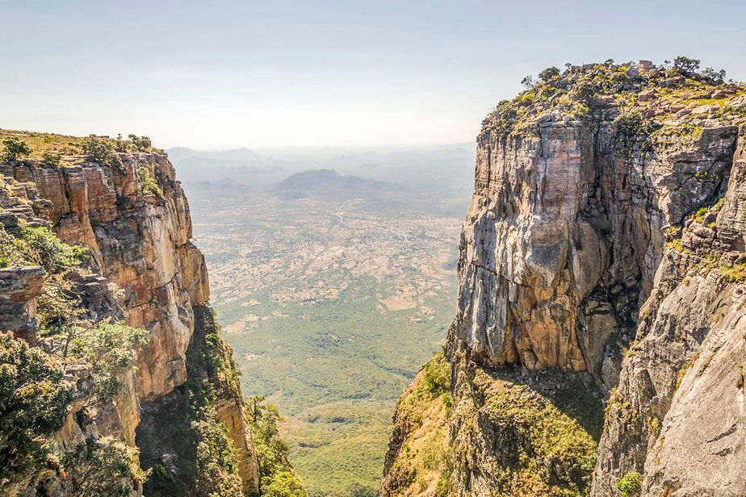

Tesouros Naturais Deslumbrantes

Tundavala
A Tundavala, próxima ao Lubango, é famosa por sua fenda profunda e vistas panorâmicas deslumbrantes, oferecendo um cenário espetacular a cerca de 2.200 metros de altitude. Ideal para amantes da natureza e fotografia.
Reservar Visita
Serra da Leba
A Serra da Leba, perto do Lubango em Angola, é conhecida pela sua estrada sinuosa que oferece vistas espetaculares das montanhas e planícies ao redor, sendo um destino popular para turistas em busca de paisagens deslumbrantes.
Reservar Visita
Quedas de Kalandula
As Quedas de Kalandula, em Angola, são famosas por suas quedas d'água espetaculares no rio Lucala, oferecendo um cenário natural impressionante e popular entre os visitantes.
Reservar Visita